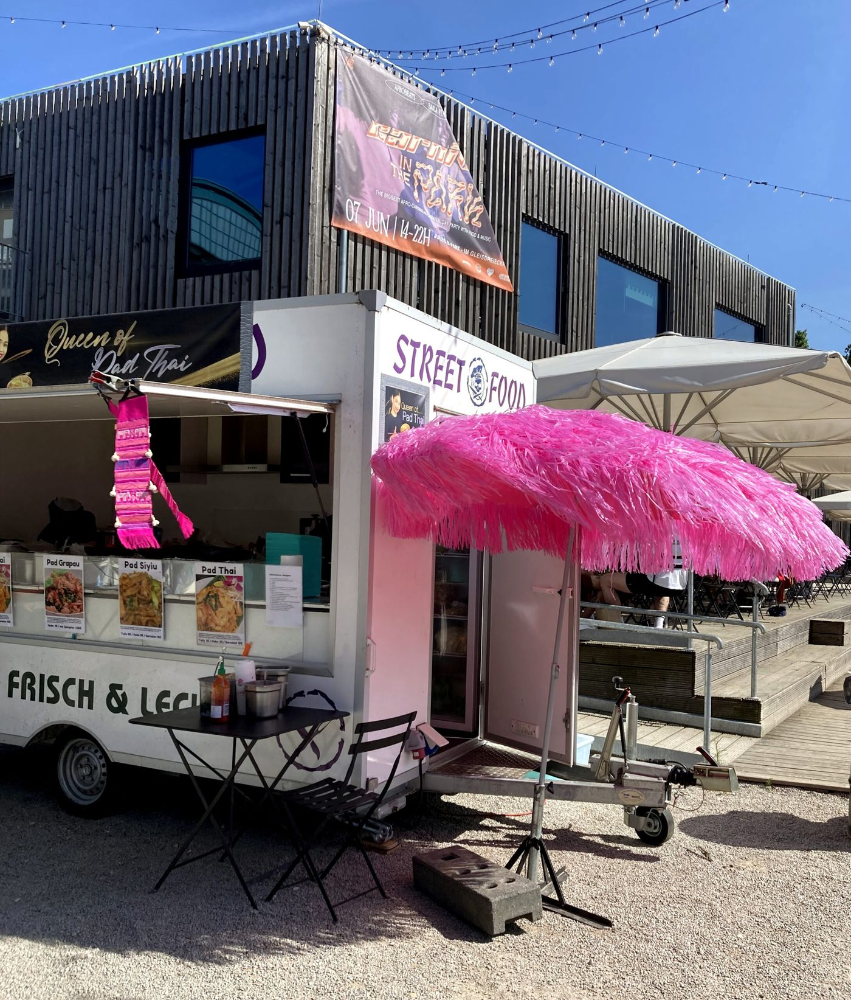
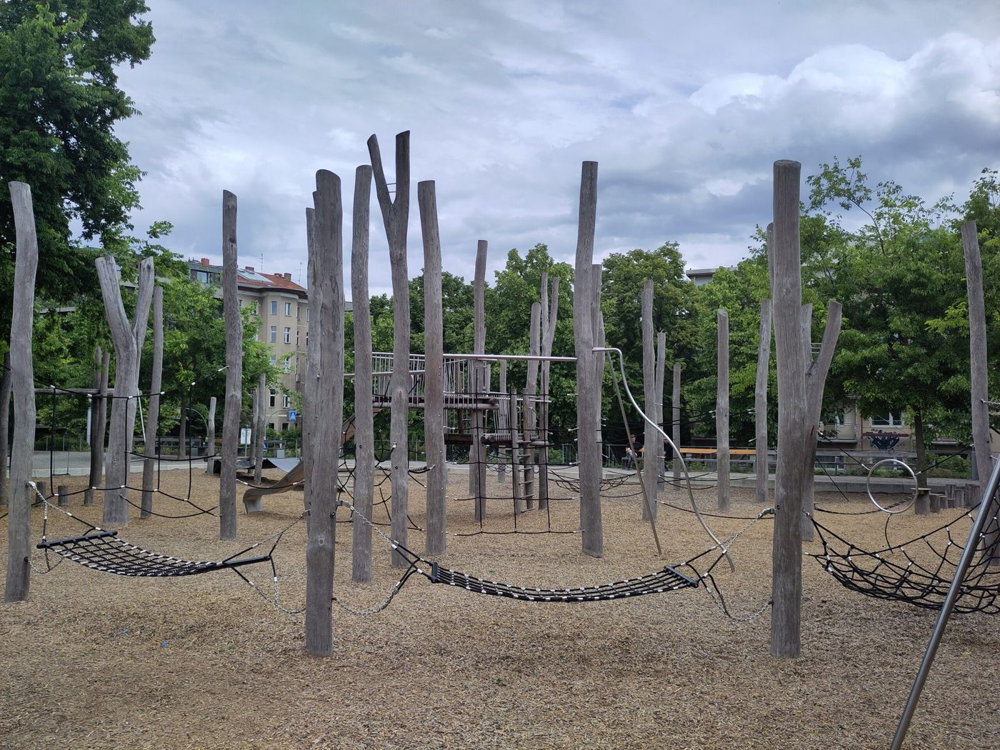

Spielplatz
Specht-Spielplatz und Gleisdreieck
Nachmittags. Ein Spielplatz und ein Platz zum Sitzen.
Essen. Café Jules, Luckenwalder Straße 6b. Unter der U-Bahn, am B-Part. Freitags steht dort der Thaimarkt Thai-Bridge. Öffnungszeiten
Stopps
- Specht-Spielplatz

Kiez mit Kind: “Specht-Spielplatz” am Karlsbad - Café Jules Öffnungszeiten

Thaimarkt „Thai-Bridge“ im Gleisdreieckpark - Gleisdreieck

Kiez mit Kind: Spielplatz Stangenwald
Gelesen
Der Park am Karlsbad, schreibt die Serie im Juli 2025, wird zwischen dem nahen Tiergarten und dem Gleisdreieck nebenan schnell übersehen. Vom Vorbeifahren kennt man ihn, wenn man nicht direkt daneben wohnt. Der Spielplatz darin sei vor nicht allzu vielen Jahren erneuert worden. Was man von der Potsdamer Straße zuerst sieht, ist nicht der Specht: Sandkasten, kleines Karussell und Wackeltier, trist am Beginn des Parks, das soll man hinter sich lassen. Danach ein Fußballkäfig in einer Hecke und fünf Tischtennisplatten, von denen meist mindestens eine frei sei, ein Geheimtipp, wenn das Gleisdreieck voll ist. Erst dann der Spielplatz, dessen Name frei erfunden ist, nach dem Specht, der an einem Eingang untätig am Holzpfahl sitzt.
Grün, viele Bäume, ganz umzäunt oder von Hecke umgeben. An den drei Eingängen öffnen sich die Schwingtore von innen nur durch Ziehen, nicht durch Drücken, damit kleinere Kinder nicht ausbüxen. Eine mittelgroße Rutsche, ein Kletterelement mit Sitznetz, eine Kleinkindwippe in einer Größe, die die Serie sonst nirgends gesehen hat, eine Netzschaukel, zwei Schaukeln, keine Babyschaukeln, genug Sand. Ein fest installierter Spielkreisel, dessen metallener Kegel einen immer leicht herunterrutschen lässt. Und ein Element, das der Text nur als „Skateboard-Simulator“ bezeichnen kann: beidseitig ein Skateboard auf einer halbkreisförmigen Schiene, mit Haltegriff. Es gab das schon vor der Erneuerung und wurde behalten. Die Standbretter fehlen seit geraumer Zeit und sind nicht wieder angebracht. Wer das Gerät von früher nicht kennt, versteht nicht, wie man damit umgeht. Außerhalb, auf der Wiese, Picknick, Ball, Federball. Bänke im Sonnen- und im Schattenbereich. An Mülleimern mangelt es nicht, neben jeder Bank. Trotzdem ist der Eingangsbereich etwas vermüllt, und auf der Wiese liegen Taschentücher, Verpackungen und Tüten, nicht extrem viel, aber sichtbar. Zu trinken und zu essen einpacken. Die nächsten Läden an der Flottwellstraße, an der Potsdamer Straße oder gegenüber am Potsdamer Platz.
Im Oktober 2025 ein kurzes Update. Der kleine, trostlose Platz beim Specht werde offensichtlich umgebaut. Er habe ein Dreh-Element und ein Spielhaus für die Kleinen, mit Klettern aufs Dach. Die Serie wünscht sich noch eine Babyschaukel, bei den Schaukeln sei Platz, und eine andere Idee für den Skateboard-Simulator. Ob die Wünsche den Umbau beeinflusst haben oder alles Zufall ist, lässt der Text offen.
Bleibt man im Gleisdreieck, beschreibt dieselbe Serie zwei weitere Plätze, und sie sind nicht austauschbar. Der Stangenwald, Januar 2026, liegt an der Kreuzberger Wiese, an der Treppe zur Möckernstraße, und ist fürs Klettern gebaut: quadratisches Netz, Spinnennetz, Leiternetze, Mattennetze, dazwischen Stämme und Seile zum Balancieren, eine Slackline ohne Handlauf. Hängematten zum Ausruhen. Für alle anderen zwei Schaukeln auf dem Platz, zwei weitere der hoch gebauten Modelle, die mehrfach im Park stehen, eine Teller- oder Reifenschaukel, eine Rutsche. Kein Sand. Eine Mattenwippe für bis zu acht Kinder. Bänke, die große Wiese nebenan, ein Kiosk direkt daneben mit Kaltgetränken, kleineren Backwaren und Eis, und eine Toilette. Wenig Schatten auf den Geräten, Bäume drumherum, an den Kiosktischen im Sommer Sonnenschirme. Etwas abseits, streng genommen nicht mehr zum Platz gehörend, drei Tischtennisplatten im Schatten. Sandburgen, schreibt der Text, soll man woanders bauen.
Das Kinderzimmer, Juli 2026, ist kein Geheimtipp, aber auf der Schöneberger Seite vielen unbekannt und bei schönem Wetter oft nicht so voll, weil es nicht an einem Hauptweg liegt und etwas abgelegen hinter dem Spektrum. Eine Pumpe mit doppeltem Wasserlauf und mehreren Becken, Staudämme, Kanäle, Boote, auch für die Kleinsten erreichbar. Nachteil: die Pumpe sitzt so nah am Holzbrett, dass man dort kein frisches Wasser zum Händewaschen oder in einen Eimer zapfen kann. Zwei große Sandflächen, drei Rutschen, Wippplatten und Wippkisten, drei klassische Schaukeln, eine Netzschaukel, eine Babyschaukel, ein Schaukelseil, Wände, Stangen und Netze. Holzverschläge, hinter denen man sich versteckt. Hörröhren für Absprachen über Distanz. Ein Holzzaun. Mehr als die Hälfte im Schatten der Silberpappeln, Tische und Bänke mitten auf dem Platz, weitere Bänke am Weg. Kleinere Äste und Mulch, Barfußlaufen ist eingeschränkt. Einpacken, weil in der Nähe nichts zu kaufen ist. Die nächsten Läden diesseits der Großbeerenstraße: die Cafés Parkgenuss am Stangenwald und TorEins.
Essen, an einem Freitag, kann der Thaimarkt sein. Der Beitrag vom 17. Juni 2025 sagt, „Thai-Bridge“ stehe zum dritten Mal wieder im Gleisdreieckpark am Café Jules und am B-Part, Luckenwalder Straße, unter der U-Bahn. Jeden Freitag von 12 bis 22 Uhr, an kleinen Ständen gebrutzelt und gebacken, exotische Getränke, draußen kleine Tische an der „Thai-Bridge“.